岡山県である。吉備路である。
備中国分寺や吉備津神社などの有名社寺、や城郭、たくさんのの古墳などもあり、歴史好き社寺好き伝承好きにはたまらないエリアといえよう。
また
鼻ぐり塚や黒住教、金光教、ほんぶしんなど
何故か新宗教が充実している御土地柄でもある。
そんな岡山県の総社市郊外にひっそりと小さな神社がある。
電車を乗り継いで着いたところはのどかな田園地帯だった。
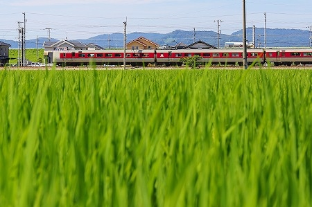
線路沿いの道をのんびり歩く。
田んぼの向こうの山裾に鳥居が見えてきた。
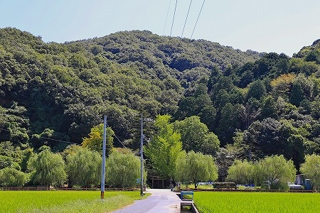
ここがお目当ての
軽部神社である。
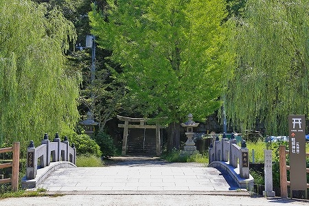
14世紀に創立されたこの神社、かつては背後の
軽部山の山頂にあったという。
その後時代が下り、江戸時代になってから現在の山裾に移転したのだとか。
室町時代から戦国時代には土地の権力者が関与したり、様々な思惑が交差した神社であったようだ。
というのもこの軽部神社の背後、かつて社殿があった軽部山の山頂からは旧山陽道に近く、高梁川の渡河地点が見下ろせる場所だった、と想像できる。
つまり、
軍事的な要所だったのだろう。
天正3年に戦火で社殿が焼失しているのはここが単なる神社ではなかった何よりの証拠であろう。
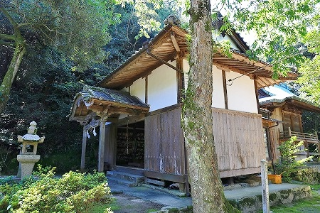
現在の軽部神社はそんなきな臭い歴史など微塵も感じさせないひっそりとした佇まいを見せている。
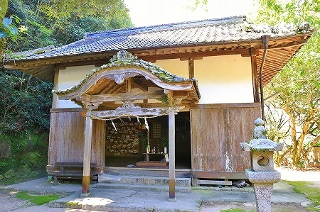
ただ、拝殿の中はこんなですけど。
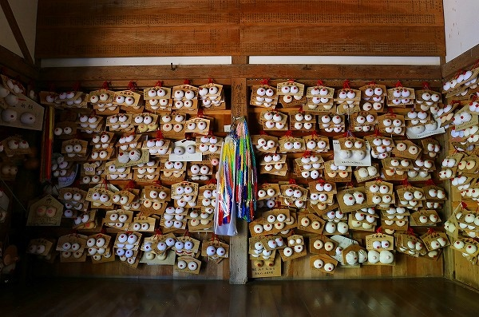
無数の
おっぱい絵馬である。
境内に
垂乳根の桜と呼ばれる枝垂桜があり、それに由来して乳の神様として近在の信仰を集めるようになったのだとか。
開口部以外の壁面にビッシリ乳絵馬が並んでいた。
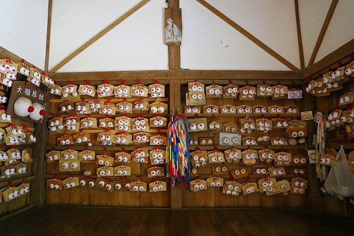
何だか見られてるみたい。
見れば乳絵馬はツータイプに分かれている。
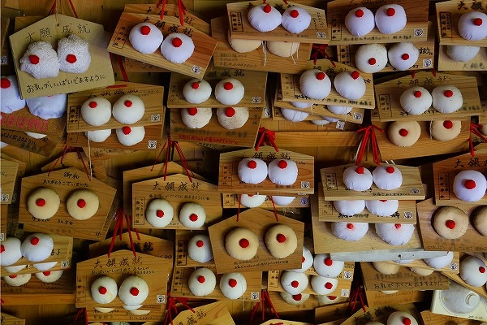
焼印を押してある神社発行のオフィシャル絵馬と自作の絵馬。
オフィシャルのものは乳も既製らしく、みな同じ形状のおっぱいだ。もちろん色も同じだよ。
一方、自作系乳絵馬は奉納者の手の痕跡があり、興味深い。
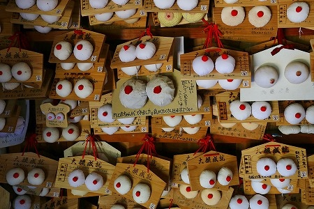
特に図抜けて巨大なサイズの絵馬には鬼気迫る真剣味が感じられた。
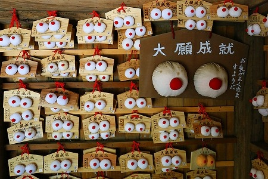
お乳よく出るといいですね…。
さらには柄布を使ってファンシーさをアピールしたり…
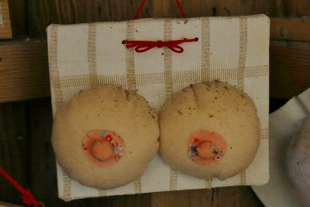
和菓子みたいな乳絵馬もあったりして、
押さえた表現の中にも様々な思いが込められていることがわかる。
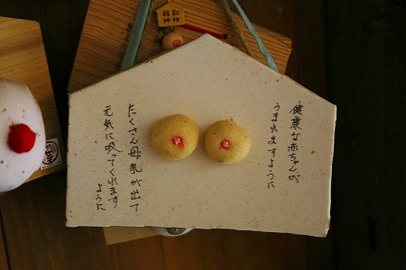
乳絵馬を見下ろすようにやや古そうなご婦人の絵馬も掲げられていた。
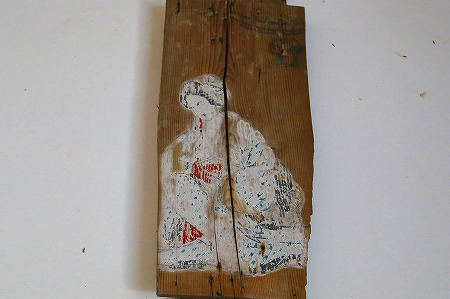
原始的な民衆宗教において
豊穣と生産のシンボルは男根と乳房である場合が多い。
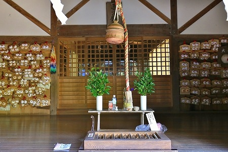
男根はともかく、何故女性の象徴が女陰ではなく乳なのかは諸説あるが、個人的には
形状の特性がその根底にあるように思う。
もちろん日本各地には女陰をシンボライズしている絵馬や奉納物もある。
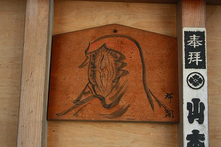
神奈川
しかし何といったらいいのだろう…ぶっちゃけ造形的に判りにくいんだよね〜。
四角い板だったり
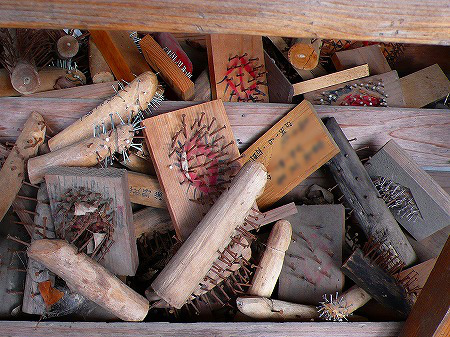
熊本
編んだ藁だったり。
 熊本
熊本
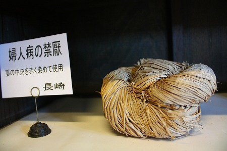
長崎
一方乳房の方は丸二つに点点ですから。これはデザインしやすいわけですよ。さらに擬人化もしやすいし。
 山口
山口
シンボルは判り易く、というデザインの鉄則は別に20世紀のモダニストが発見したわけではなく、昔からの原則だったんですね。
賽銭箱の脇には「赤ちゃんは母乳で育てよう」的なパンフレットと体験談ノートがあった。
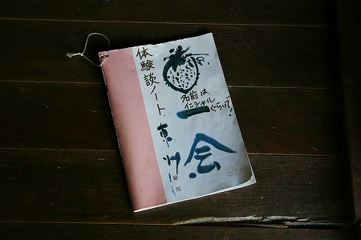
何となく手にとってパラパラめくってみた。
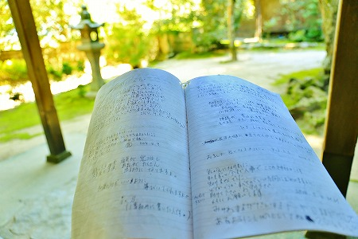
乳がんで乳房を切除した人や子育てに悩む人、その他様々な苦しみが切々と書かれていて思わず読み入ってしまった。
脳の容量のほとんどが燃えよドラゴンと孤独のグルメで埋め尽くされているであろう世の男（自分を基準にしてますんで違ってたらすまんのう）には到底判らない苦しみを読んでいたら、おっぱい絵馬で薄ら笑いしてた10分前の自分を叱ってやりたい気持ちになりました…。
ついでにあっちこっち蚊に刺されましたよ。